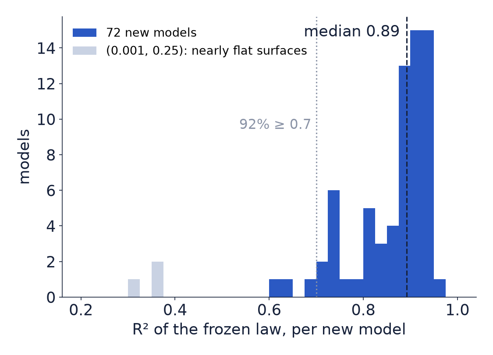
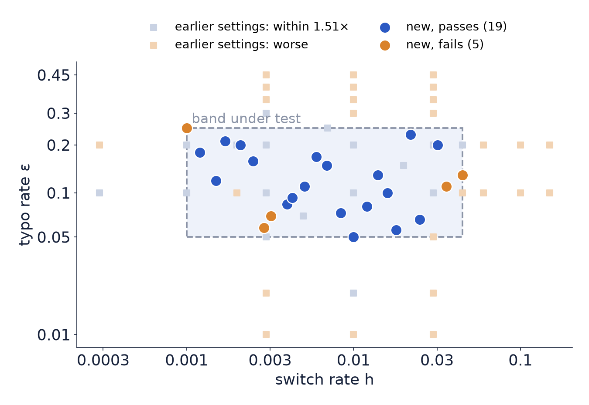
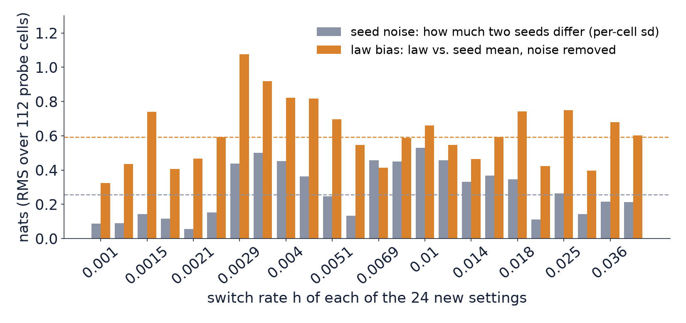
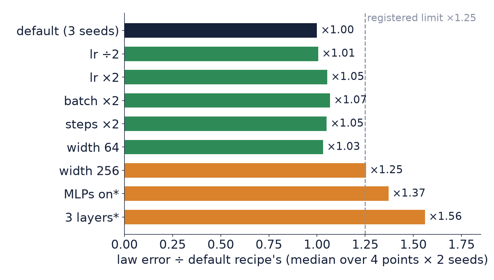
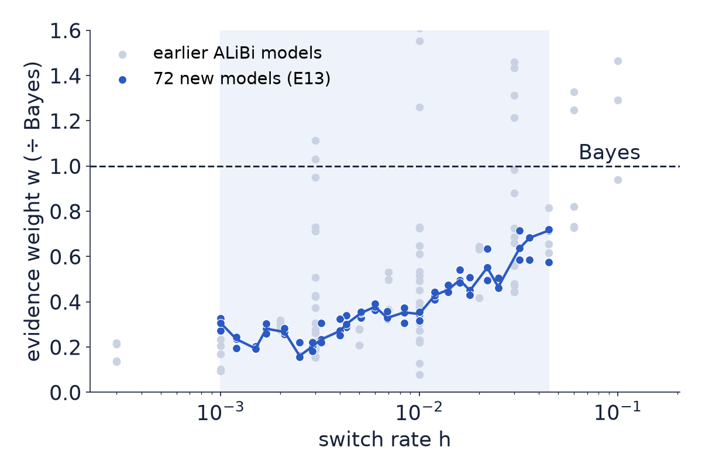

TOLLM project · validation round (run 8)
A pre-registered test on 148 newly trained models:
where it works, how much it varies, what it ignores
Nirbhay Sharma · Gathik Jindal · 5 November 2026
The question · from the last meeting
Design · 148 runs on the college GPUs, 00:30–04:50 IST, 0 failures
Result 1 · E13, 72 new models at 24 new settings

The three low-R² models are all at (h, ε) = (0.001, 0.25), where the probe surfaces are nearly flat; their absolute error is small (0.32 nats).
Result 2 · where inside the band it is weakest

Result 3 · the variability, in numbers

Result 4 · E14, does the training recipe matter? (76 models)

Bonus · exploratory, not pre-registered

The claim for the paper